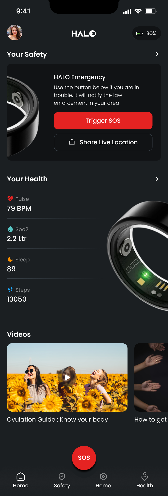
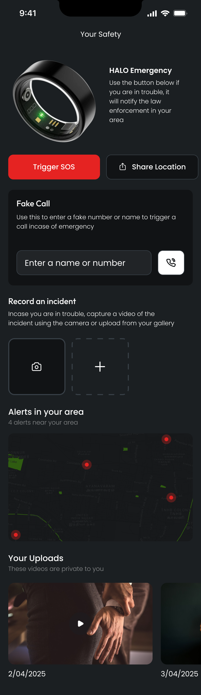
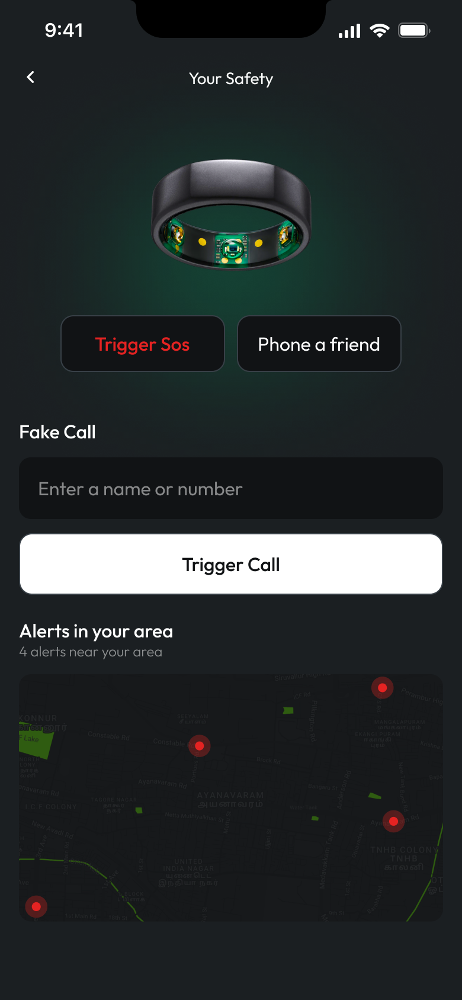
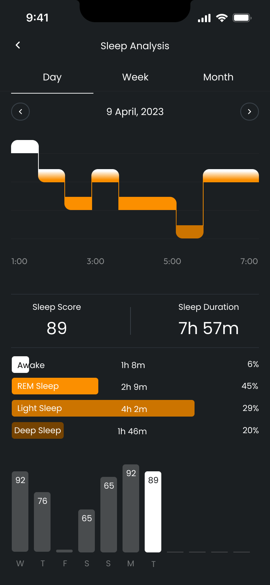
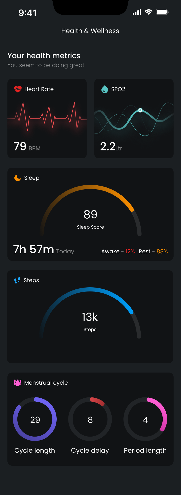
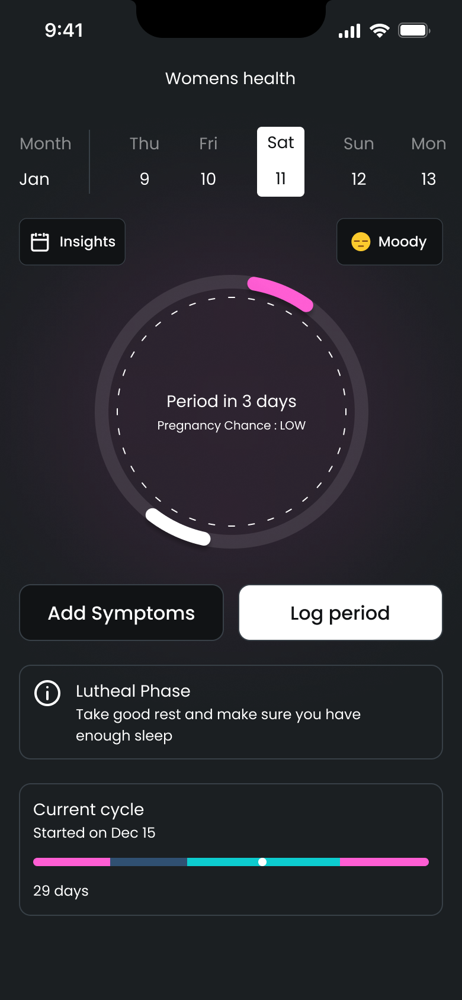

Smart Ring · Health + Personal Safety
HALO is the companion app for a smart ring that tracks sleep, heart rate and cycles — and doubles as a personal safety device with one-touch SOS, fake calls and live incident recording.
01 — Overview
Wearables are great at telling you how you slept. HALO asks a bigger question: what if the same ring that reads your heart rate could also get you out of a dangerous situation? One device, one app — your wellbeing and your safety in a single glance.
As Lead Product Designer I shaped the companion app end-to-end: the dual-purpose home, sleep and vitals analytics, the women's health module, and the safety layer — SOS, fake call, incident recording and area alerts.
The hardest problem wasn't data visualisation — it was tone. The same interface has to feel calm when you're checking your sleep score and instant when you're triggering an SOS. Two emotional registers, one design system.
02 — The Challenge
Safety features buried two menus deep are safety features that don't exist. SOS has to be reachable from anywhere, instantly, under stress.
Sleep stages, HRV, SpO2, cycles, steps — a ring generates constant data that must read at a glance, not as a spreadsheet.
Cycle tracking, incident videos, live location — this app holds a person's most private data. Every screen has to earn trust.
03 — Design Principles
A persistent red action lives in the tab bar and on every safety surface — findable by muscle memory, usable in panic.
The alarm colour is reserved exclusively for safety. Health data gets its own spectrum, so red always means act now.
Every metric leads with one number and one trend. Charts and history live one tap deeper, never on the first screen.
Incident uploads are private by default, location is shared only on action, and cycle data never leaves the device unencrypted.
04 — The Architecture
05 — Design System
On OLED black, every colour is information: red is reserved for emergency, and each vital owns a hue. Poppins keeps large numbers soft and readable at arm's length.
79
Poppins
The product's voice — geometric and friendly, so clinical data (79 BPM, 7h 57m, SpO2) never reads as clinical.
SemiBold · Medium · Regular — 0123456789
Palette
Emergency only — never decoration
Sleep stages & scores
Heart rate, SpO2, steps
Women's health module

Hierarchy follows stakes: the emergency card leads the screen — you should never scroll to find help. Vitals follow in glanceable rows.
The red button in the dock. SOS sits centre of the tab bar on every screen, oversized and unmistakable — reachable with a thumb, in the dark.
Content that meets the moment. Guides and videos surface below the fold, tuned to your health profile rather than a generic feed.
07 — Deep Dive · Safety
One tap notifies law enforcement with live location. Confirmation is designed to prevent accidents without slowing real ones.
Type any name and HALO stages an incoming call — a socially graceful exit from a situation that doesn't feel right.
Capture video from the incident screen or upload after; files stay private and timestamped for evidence.
A live map of verified nearby incidents — awareness without anxiety, on a deliberately dimmed basemap.


08 — Deep Dive · Health

Stages flow left to right like the night itself — REM, light and deep in warm oranges — with score and duration as the only numbers you must read.

Heart rate, SpO2, sleep, steps and cycle each own a card and a colour. Trends read from the shape of the chart before you read a single digit.
Prediction with a calendar, not a countdown. "Period in 3 days" sits inside a week view you control — logging symptoms and periods takes two taps.
Phase-aware guidance. The app knows you're in the luteal phase and adjusts its advice — rest more, sleep earlier — in plain language.
Private by architecture. Cycle data feeds on-device insights and nothing else. It is never used outside the module, and never shared.

10 — Outcomes
Illustrative metrics — swap in real figures once you have them.
Median time from any screen, measured in usability tests.
Users reading a vital correctly within two seconds.
The health half earns the habit the safety half relies on.
False triggers across the entire test cohort.
11 — Reflection
Designing for panic rewired how I think about hierarchy. Under stress, people don't read — they reach. Every safety decision came down to physical reachability and unmistakable colour, tested until finding SOS required no thought at all.
Reserving red for emergencies was the single highest-leverage system decision. It cost us a convenient error colour everywhere else — and bought an interface where one glance at red tells you exactly how serious things are.